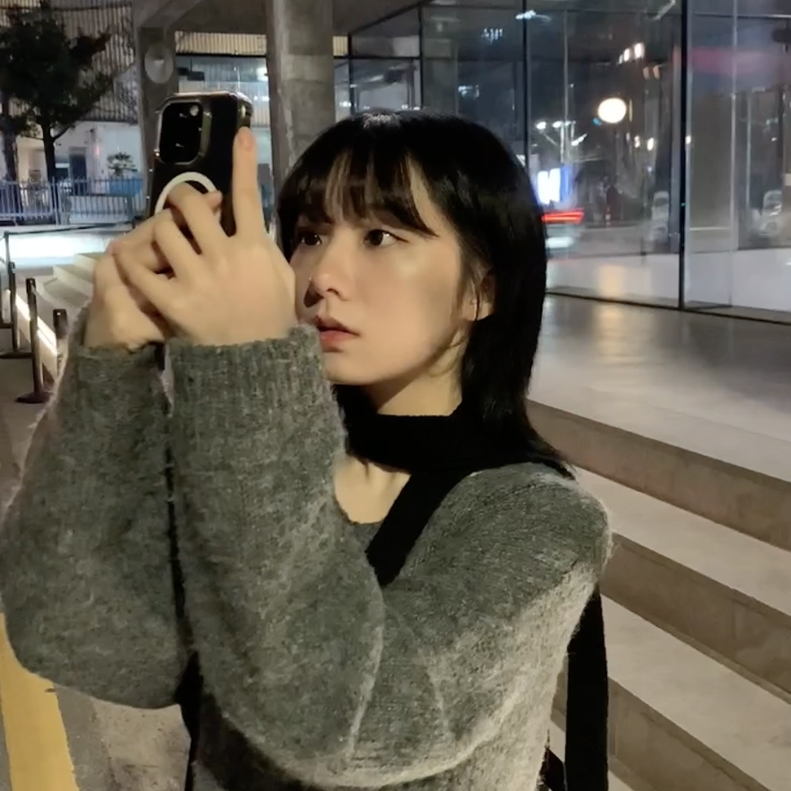

정하늘
상명대학교 2학년 | 지능IOT융합전공 | 프론트엔드 개발자
👋 자기소개
저는 현재 상명대학교 지능IOT융합전공에 재학중인 정하늘 입니다.
프론트엔드 개발에 흥미를 느껴 멋쟁이사자처럼대학에서 프론트엔드
개발자가 되기 위한 지식을 배우는 중입니다.
📜 현재 활동
- 전공: 상명대학교 지능IOT융합전공
-
진행 중: 멋쟁이사자처럼 13기 아기사자, 상명대학교
융합공과대학 10대 학생회 '태그' 기획부원
- 목표: 프론트엔드 완벽 이해하기
- 관심 분야: 프론트엔드 개발
💼 프로젝트 경험
- 프로젝트를: 해본게 없으면 어떡하죠
- 일단: 아무말이나 써볼게요
- 멋사활동: 너무 어렵지만 재미 있습니다!
-
오늘도: 인터넷에서 이것 저것 찾아보면서
하는중이지만
- 그래도 언젠가: 실력이 늘겠죠...?